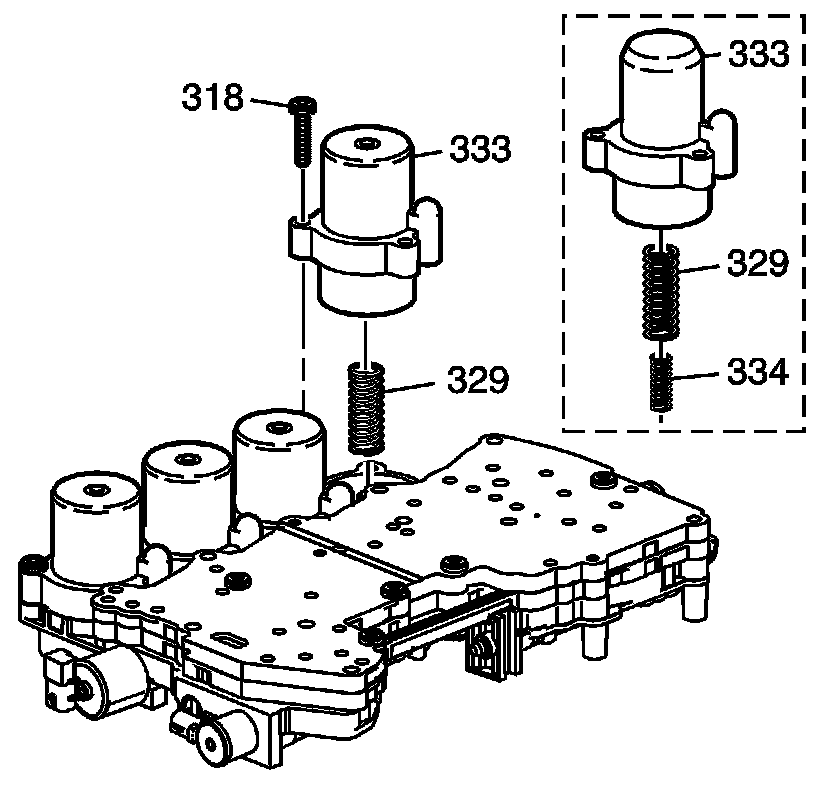
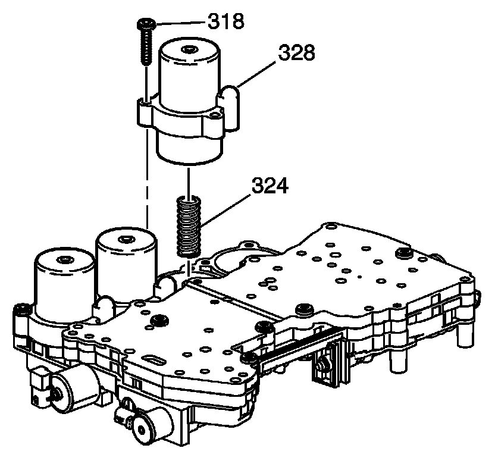
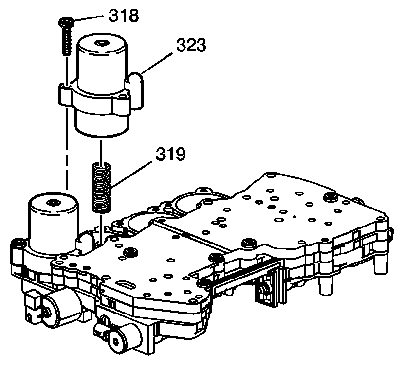
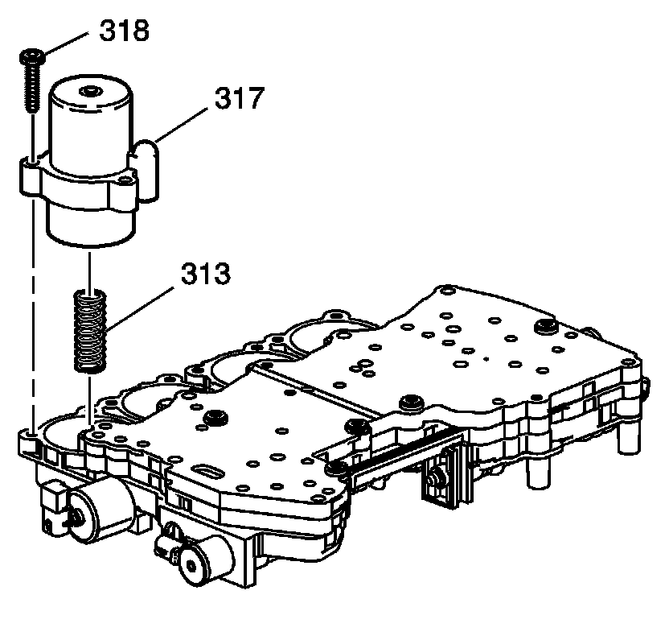
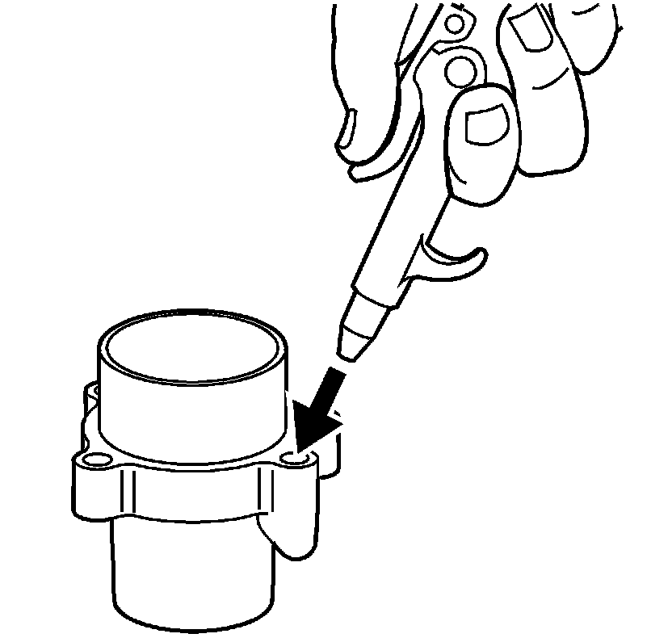
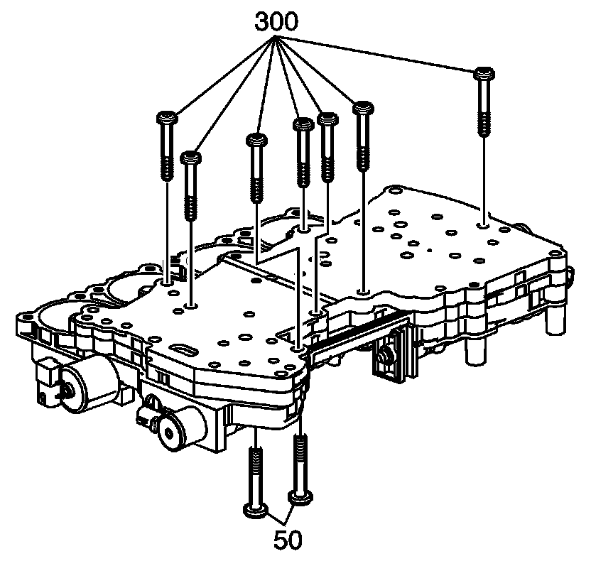
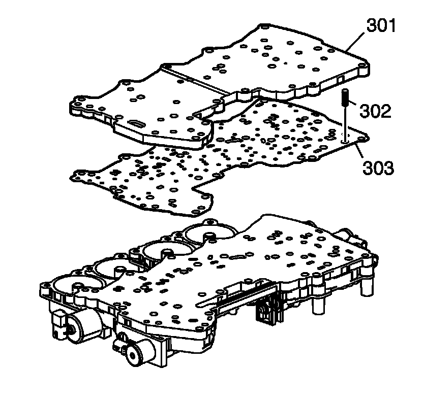
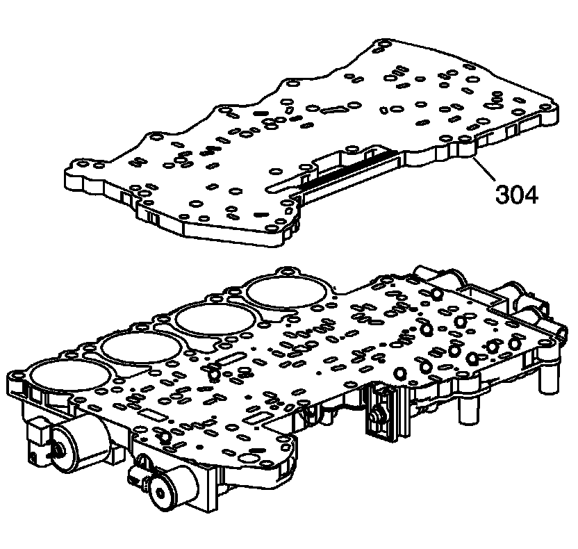
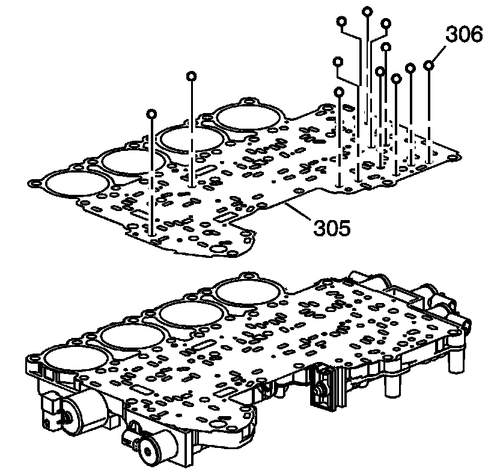

Control Valve Body Accumulator Assembly Disassemble
Control Valve Body Accumulator Assembly Disassemble

Notice: Note the position of each accumulator before removal. The accumulators must be assembled in the same positions, or damage may occur.
1. Remove the 2nd clutch accumulator housing bolts (318).
Important: The 5L50-E has a unique stackup on the 2nd clutch accumulator housing.
2. Remove the 2nd clutch accumulator housing (333) and spring (329).

3. Remove the intermediate clutch housing bolts (318).
4. Remove the intermediate clutch accumulator housing (328), and spring (324).

5. Remove the overdrive clutch accumulator housing bolts (318).
6. Remove the overdrive clutch accumulator housing (323), and spring (319).

7. Remove the direct clutch accumulator housing bolts (318).
8. Remove the direct accumulator housing (317), and spring (313).

Important: It may be necessary to use air pressure to remove the piston.
9. Release the piston with air pressure.

10. Remove the 2nd clutch accumulator piston (331) from the 2nd clutch accumulator housing (333).
11. Remove the 2nd clutch accumulator piston rings (332, 330).
Important: It may be necessary to use air pressure to remove the piston.
12. Release the piston with air pressure.

13. Remove the intermediate clutch accumulator piston (326) from the intermediate clutch accumulator housing (328).
14. Remove the intermediate clutch accumulator piston fluid seal rings (325, 327).
Important: It may be necessary to use air pressure to remove the piston.
15. Release the piston with air pressure.

16. Remove the overdrive clutch accumulator piston (321) from the overdrive clutch accumulator housing (323).
17. Remove the overdrive clutch accumulator piston fluid seal ring (320, 322).
Important: It may be necessary to use air pressure to remove the piston.
18. Release the piston with air pressure.

19. Remove the direct accumulator housing piston (315) from the direct accumulator housing (317).
20. Remove the direct clutch accumulator piston fluid seal rings (314, 316).

21. Remove the control valve body bolts (50, 300).

22. Remove the control valve body channel plate (301).
23. Remove the channel plate ball check spring (302) and the gasket (303).

24. Remove the control valve body channel plate (304).

Important: The checkballs (306) may be inside the bottom channel plate, or may be sitting on gasket (305).
25. Remove the checkballs (306) and the gasket (305).

26. Remove the control valve body spacer plate (307).
27. Remove the filters (308, 312).
28. Remove the spacer plate gasket (309).